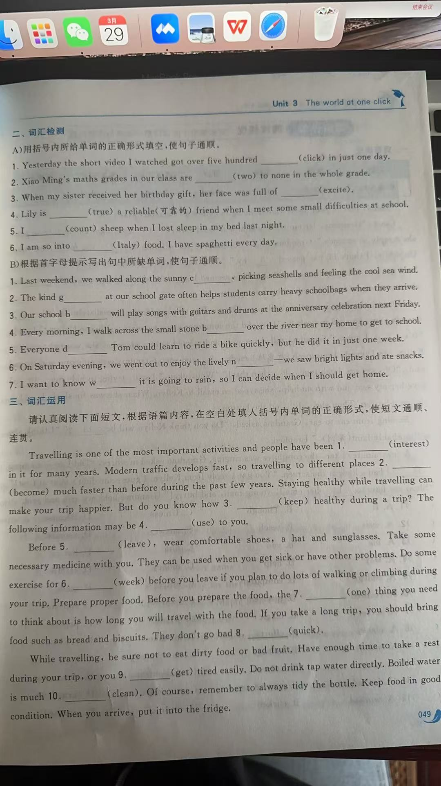

A demonstration of what can be accomplished through CSS-based design. Select any style sheet from the list to load it into this page.
无论工作多么单调、乏味，生活依旧是斑斓、多彩的。在你匆匆赶路时，不要忽略身边的一朵小花，一株小草，一颗果实。再微小的物件，也会散发着它的美丽。
We must clear the mind of the past. Web enlightenment has been achieved thanks to the tireless efforts of folk like the W3C, WaSP, and the major browser creators.
The CSS Zen Garden invites you to relax and meditate on the important lessons of the masters. Begin to see with clarity. Learn to use the time-honored techniques in new and invigorating fashion. Become one with the web.
物理学家霍金写过一本“果壳里的宇宙”。刨去抽象的物理学概念，对我而言，每一个小小的果实都是一个宇宙。
CSS allows complete and total control over the style of a hypertext document. The only way this can be illustrated in a way that gets people excited is by demonstrating what it can truly be, once the reins are placed in the hands of those able to create beauty from structure. Designers and coders alike have contributed to the beauty of the web; we can always push it further.
Just a placehold on GitHub for testing now.

